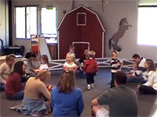
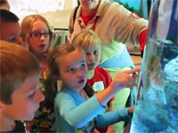
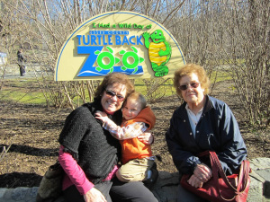

Modern zoos try not only to be for people's entertainment, but for education, research, and the conservation and protection of animals. Many zoos are centers where rare animals are preserved when they are in danger of dying out. These modern zoos also want to give the animals a natural life, so that they are healthy and behave normal. This is done for the animals, but also that people can see the animals as if they were in nature, and not in a zoo. Zoos cost money. They educate the public on the biological diversity that makes up the world. They help people and wildlife successfully coexist. They pursue continuing research and education for people. They preserve crucial natural resources. They work to ensure zoos can provide the most natural environment possible for wildlife in its care. Without enough money they cannot do these things. Many zoos are not like the modern type of zoo. There the animals are held in bad conditions. They are kept in small cages, and they are bored and get sick.
The mission of the Zoological Society of Doll is to take part in conserving wildlife and endangered species, to educate people about the importance of wildlife and the environment, and to support the DOLL County Zoo.
With education as a core component of the Society mission, we are one of the largest zoo education programs in the country, hosting approximately 300,000 encounters with guests annually. We educate about wildlife and the environment through several interactive, hands-on programs onsite at the Doll County Zoo or at your location, including: fall, winter and spring classes for all ages; summer camps; school programs and Doll Wild Theater.
 
One of my favorite things to do as a family is to visit a zoo. I love witnessing the wonder and amazement in my boys’ eyes as they see an animal for the first (2nd and 3rd) time! Their faces light up and their smiles come alive as they point to each animal in excitement.
According to the Association of Zoos and Aquariums, zoos and aquariums have over 181 million visitors each year. We have already shared the many benefits of visiting an aquarium, so now it’s time to take a closer look at zoos. Visiting a zoo offers so many incredible learning opportunities. While having a fun day exploring, kids will develop valuable skills and obtain priceless knowledge. A day at the zoo also encourages a healthy lifestyle while bringing family and friends together. It is the perfect day trip destination for any season!
There are so many amazing benefits to visiting a zoo that is was difficult to narrow the list down.

Modern zoos try not only to be for people's entertainment, but for education, research, and the conservation and protection of animals. Many zoos are centers where rare animals are preserved when they are in danger of dying out. These modern zoos also want to give the animals a natural life, so that they are healthy and behave normal. This is done for the animals, but also that people can see the animals as if they were in nature, and not in a zoo. Zoos cost money. They educate the public on the biological diversity that makes up the world. They help people and wildlife successfully coexist. They pursue continuing research and education for people. They preserve crucial natural resources. They work to ensure zoos can provide the most natural environment possible for wildlife in its care. Without enough money they cannot do these things. Many zoos are not like the modern type of zoo. There the animals are held in bad conditions. They are kept in small cages, and they are bored and get sick.
Modern zoos try not only to be for people's entertainment, but for education, research, and the conservation and protection of animals. Many zoos are centers where rare animals are preserved when they are in danger of dying out. These modern zoos also want to give the animals a natural life, so that they are healthy and behave normal. This is done for the animals, but also that people can see the animals as if they were in nature, and not in a zoo. Zoos cost money. They educate the public on the biological diversity that makes up the world. They help people and wildlife successfully coexist. They pursue continuing research and education for people. They preserve crucial natural resources. They work to ensure zoos can provide the most natural environment possible for wildlife in its care. Without enough money they cannot do these things. Many zoos are not like the modern type of zoo. There the animals are held in bad conditions. They are kept in small cages, and they are bored and get sick.
-----------------------------------------------------------------------------------------------------------------------------------------------------------------------------------------------------------------------------------